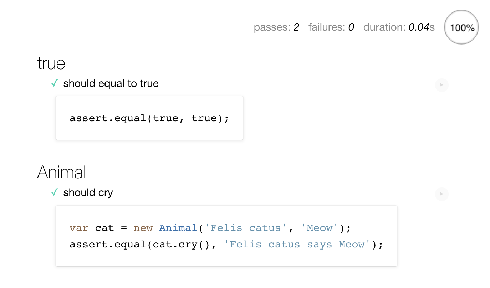
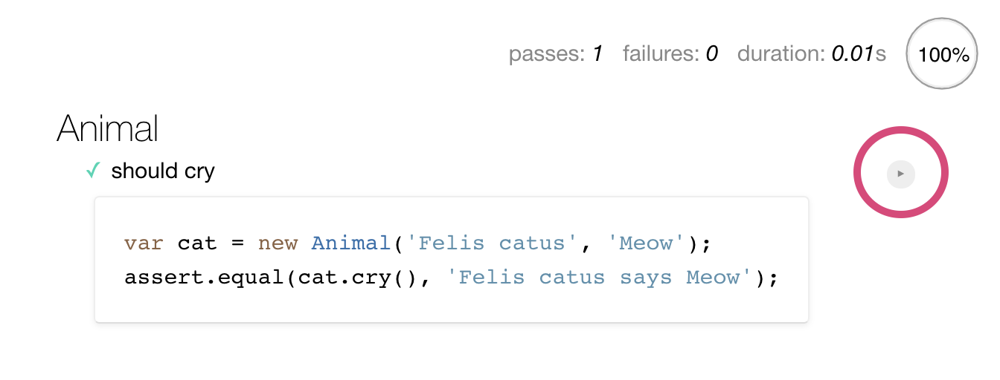
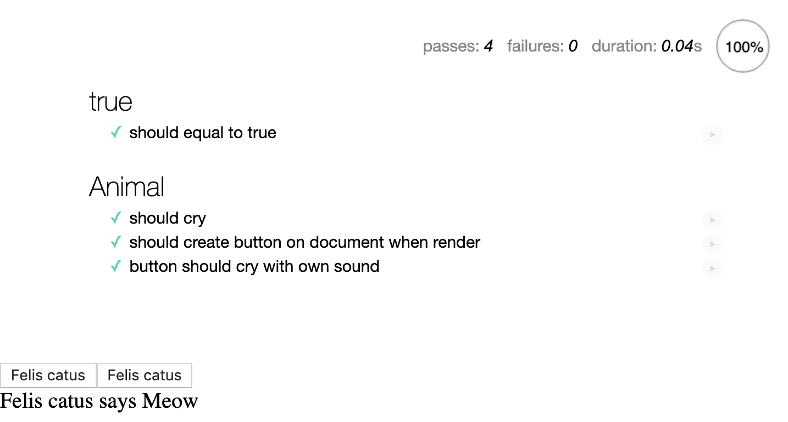
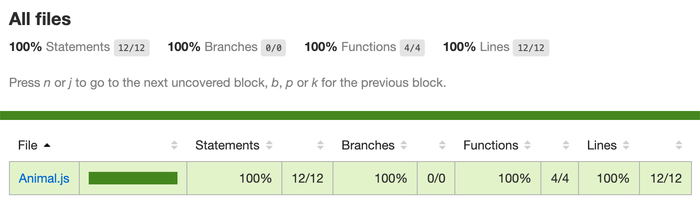
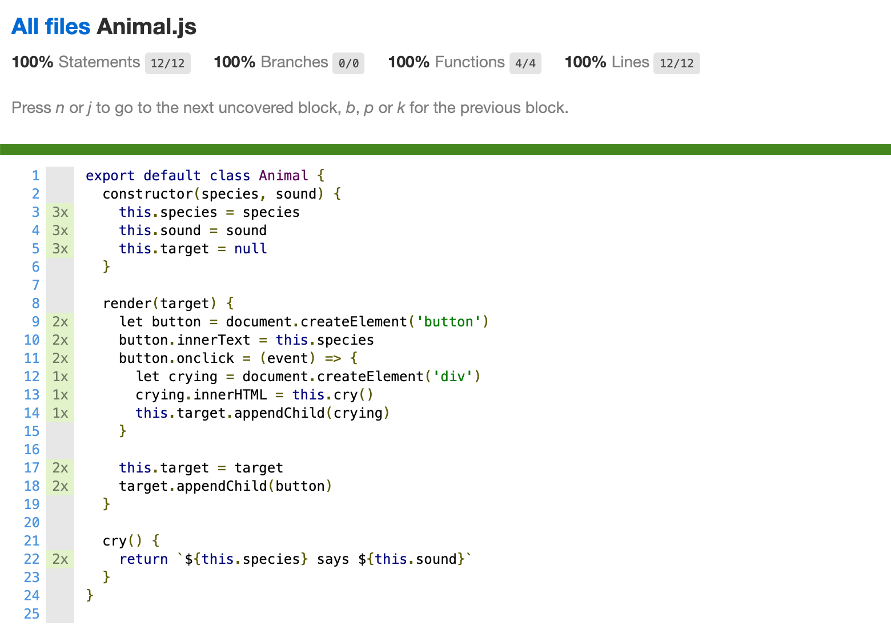

요즘 만들고 있는 슬라이드 서비스 코드가 더 엉망이 되기 전에 유닛 테스트를 붙이고 관리하기 위해 관련 도구를 도입하기로 했다. 유닛 테스트 작성에 대해 테스트를 위한 테스트라며 회의적인 시각을 가진 사람도 많지만, 나는 유닛 테스트를 통해 코드 재작성 과정에서 이득 본 경험이 있고, 오픈소스 프로젝트라면 새로운 기여자를 찾기 위한 가장 기초적인 준비라고 생각하기 때문에 유용하다 생각하는 편이다.
자바스크립트 기반 프로젝트에선 항상 누군가 만들어놓은 환경 위에서 작업해오기만 했고, 이와 관련된 부분을 처음부터 작성해본 적은 없어 도입한 기록을 남겨본다.
아래의 모듈을 사용해서 자바스크립트의 번들링, 트랜스파일링, 유닛 테스트와 커버리지 작업을 진행하였다.1
- Webpack: 자바스크립트 모듈 번들러.
- Babel: 자바스크립트 트랜스파일러.
- Mocha: 자바스크립트 테스트 프레임워크.
- Karma: 작성한 테스트를 웹 브라우저로 테스트해 주는 테스트 러너.
- karma-webpack: Webpack 설정을 Karma에서 사용하기 위한 플러그인.
- Istanbul: 자바스크립트 테스트 커버리지 도구.
- karma-coverage: Karma에서 Istanbul을 사용하기 위한 플러그인.
각각의 도구를 알아보기 전에 위와 같은 도구들이 나온 배경에 대해 알아보자.
JavaScript, last two decades
Webpack을 설명하기 전에 지난 20년간의 자바스크립트와 생태계의 발전 과정을 간단하게 살펴볼 필요가 있다. 2000년대에 들어와 서로 비표준 확장과 지원을 추가하며 각자의 방향으로 성장하고 있던 웹 브라우저들의 경쟁 속에서, 부족한 기본 스크립팅 기능을 보강하고, 다양한 환경에서 동일한 동작을 보장하기 위한 Prototype.js, MooTools, Underscore 등 여러 자바스크립트 라이브러리들이 등장했고, 그중 존 레식이 만든 jQuery가 가장 널리 사용되며 프론트엔드 자바스크립트 개발의 저변을 넓히는 데 큰 역할을 했다.
2000년대 후반에는 구글이 크롬 웹 브라우저를 위해 C++로 개발한 고성능 자바스크립트 엔진인 V8을 기반으로 비동기 입출력 라이브러리인 libev를 더해 라이언 달2이 백엔드 서비스 개발을 위해 만든 Node.js가 비동기 프로그래밍을 선호하는 웹 개발자들 사이에서 크게 유행하며, 자바스크립트 사용처와 사용자가 한층 더 늘어나게 되었다. libev는 리눅스에서만 이벤트 시스템으로 동작했기 때문에, 이후 윈도의 IOCP, macOS의 kqueue 등을 제대로 지원하는 libuv로 교체되었다.
이렇게 늘어가는 저변에 비해, 자바스크립트 언어의 스펙과 구현은 그에 못 미치는 부분이 많았다. ECMA-262 표준으로 만들어지는 ECMAScript 언어의 여러 구현체 중 하나를 자바스크립트라 부르는데, 1995년 넷스케이프에서 근무했던 브렌던 아이크가 개발했던 것이 시초이다. 처음에는 Mocha, LiveScript 등으로 불렸으나3, 이제는 자바스크립트라 통용되고 있다. 현재 ECMA의 TC39 위원회가 ECMAScript 언어의 명세를 발전시키고, 다양한 회사와 단체에서 이 명세에 기반하여 언어의 구현체를 만들고 있지만, 1997년 ECMA-262 표준화 작업 이전에는 최초로 구현된 자바스크립트와 호환되는 각자의 구현(예: JScript)이 존재했고, 다양한 웹 브라우저에서 작동할 복잡한 자바스크립트 프로그램을 만들어 안정적으로 최종 사용자에게 공급하기는 어려운 일이었다.
Node.js 생태계는 기존의 프론트엔드 자바스크립트 생태계와 별도로 빠르게 발전하며, Node.js 만의 새로운 모듈 규칙과 서비스가 늘어나기 시작했다. 웹 브라우저의 상황에 의존할 수밖에 없는 프론트엔드와 달리, 백엔드는 사용자 측의 새로운 브라우저 수용 등의 변화를 기다릴 필요 없이 원하는 대로 진행할 수 있었기에 이런 일이 일어났다고 생각한다.
프론트엔드 자바스크립트가 웹 브라우저의 <script> 태그에 의존해 여러 스크립트 파일을 순차적으로 불러오는 수준이었던 것과 비교해, Node.js 에서는 모듈화를 위해 CommonJS, AMD(Asynchronous Module Definition) 등의 프로젝트에 기반한 require 문법을 상대적으로 빠르게 도입하고, 프론트엔드 개발에서 외부 라이브러리의 관리를 위해 주로 Bower를 사용하던 것과 별도로 npm, yarn 등의 새로운 패키지 저장소와 package.json 문법의 의존성 관리 시스템을 구축하여 더 대중적으로 널리 사용하게 되었다.
ECMAScript 쪽에서도 모듈화에 대한 작업이 진행되어 ES Modules에 대한 논의와 표준화 작업이 이루어져 ES6(ES2015)에 반영되었지만, 아직 웹 브라우저에서 본격적으로 ES Modules만으로 모듈화된 자바스크립트 개발을 진행하기는 어렵다고 생각한다.
이런 배경속에서, 자바스크립트 개발자들은 새롭게 제안된 언어의 기능을 Node.js 런타임, 웹 브라우저의 지원을 기다리지 않고 폭넓게 사용하기 위해 폴리필과 트랜스파일링4을 적극적으로 사용하게 되었다. 폴리필(충전재)은 그 이름과 같이 런타임에서 제공하지 않는 기능을 사용하고자 할 때 메꿔주는 역할을 하며, 트랜스파일링은 언어의 표현과 문법 그 자체를 다른 언어로 바꿔주는 것을 말한다. 예를 들어, ES6로 작성한 코드는 ES3만 지원하는 웹 브라우저나 오래된 Node.js 런타임에서 작동하지 않기 때문에, 이런 경우에 Babel 등의 트랜스파일러로 변환하는 과정이 필요하다.
- The Developer's Guide To Writing Cross-Browser JavaScript Polyfills
- 프론트엔드 기술 조감도: Babel
- Toast UI – FE Guide, ES5 to ES6+
이런 배경에서 모듈화된 자바스크립트 코드를 트랜스파일링하고, 난독화함과 동시에 크기를 줄이고 여러 모듈의 파일을 하나로 빌드하는 번들링, 너무 큰 경우에 필요한 만큼 나누는 코드 스플리팅, 생성된 코드를 쉽게 디버깅 하기 위한 소스맵 생성 과정 등을 단순화, 표준화하려는 노력이 있었고, 초기에는 이런 다양한 기능을 여러 플러그인을 통해 한 곳에서 수행하는 태스크 러너라는 형태로 Grunt, Gulp 등을 사용하였다. 하지만 npm이 대중화되고 패키지 관리 뿐 아니라 내장된 스크립팅 기능을 쓰기에 어려움이 없어, 개발자들은 별도의 태스크 러너를 사용하기보다는 모듈 번들링을 강조한 Webpack, Rollup, Parcel 등을 더 많이 사용하게 되었다.
React, Vue 등의 현대적 프레임워크들은 최신의 자바스크립트, 또는 타입스크립트 문법을 사용할 뿐 아니라, 기존의 HTML = 템플릿 / CSS = 스타일링 / JS = 기능 구현으로 구분되었던 전형적인 웹 공식에서 벗어나, JSX, Styled component 등을 적극적으로 도입하며 본격화된 모듈/컴포넌트 기반의 웹 개발을 가능하게 만들었는데, 이는 앞서 설명했던 모듈 시스템, 번들링과 트랜스파일링 등이 보급되었기 때문이라고 생각한다.
Preparing
이제까지 나온 웹 개발 도구들과 환경을 일일이 익혀 도입하기 쉽지 않다 보니, 각 개발자가 자신이 자주 사용하는 프로젝트의 형태를 만들어주는 스캐폴딩(scaffolding, 발판)이나 보일러플레이트(boilerplate, 상용구) 등을 만들어 배포하고, Yeoman과 같은 스캐폴딩 전용 도구를 사용하기도 하였으나, 요즘은 create-react-app이나 Vue CLI처럼 프레임워크 자체적으로 환경을 설정하는 도구를 만들어 배포하는 경우도 늘고 있다.
이러한 도구를 사용하여 개발을 시작하는 경우에는 빠르게 개발 환경을 구축할 수 있다는 장점이 있지만, 정작 개별 도구의 설정이 필요한 경우에 한꺼번에 알아야 할 내용이 많아 부담스럽기도 하다. (create-react-app에서 npm run eject를 하고 난 후를 생각해보자) 각각의 내용을 간단하게라도 훑고 지나가면 어떤 문제가 발생했을 때 그 원인을 찾아 분석하는 데 도움이 되리라는 생각이 이 글을 적기 시작했다.
동물들의 정보를 오브젝트로 받아 화면에 버튼을 만들고, 버튼을 누르면 동물의 울음소리를 화면에 출력하는 간단한 자바스크립트 프로젝트에 대해 Webpack 설정을 시작해보자.
index.html
<!DOCTYPE html>
<html>
<head>
<meta charset="UTF-8" />
<title>Animals</title>
</head>
<body>
<script src="index.js"></script>
</body>
</html>
index.js
class Animal {
constructor(species, sound) {
this.species = species
this.sound = sound
this.target = null
}
render(target) {
let button = document.createElement('button')
button.innerText = this.species
button.onclick = (event) => {
let crying = document.createElement('div')
crying.innerHTML = this.cry()
this.target.appendChild(crying)
}
this.target = target
target.appendChild(button)
}
cry() {
return `${this.species} crys ${this.sound}`
}
}
const main = () => {
let animals = {
'Cat': {
'species': 'Felis catus',
'sound': 'Meow',
},
'Dog': {
'species': 'Canis lupus familiaris',
'sound': 'Woof',
},
}
Object.entries(animals).forEach(([key, info]) => {
let animal = new Animal(...Object.values(info))
animal.render(document.body)
})
}
window.onload = () => {
main()
}
샘플 코드는 하나의 자바스크립트 코드 내에 Animal 클래스와 동물의 목록을 받아 실제로 클래스 인스턴스를 만드는 코드가 모두 들어있다. 이를 목적에 맞게 나눠 각자의 파일로 분리해보자.
Animal.js
export default class Animal {
…
}
index.js
import Animal from './Animal.js';
const main = () => {
…
}
window.onload = () => {
…
}
위 코드를 브라우저를 통해 다시 실행하려고 하면 Uncaught SyntaxError: Unexpected identifier 에러를 얻게 된다. (ES Modules를 지원하는 웹 브라우저라도 <script> 태그에 type="module"을 추가해야 모듈 기능을 사용할 수 있다) 이제 트랜스파일러와 번들러를 통해, 모듈을 지원하지 않거나 새로운 문법을 지원하지 않는 브라우저에서도 코드를 실행할 수 있도록 만들어보자. 앞서 언급했던 npm을 설치하여 앞으로 사용할 패키지들을 받고 관리할 수 있도록 한다.
npm
npm은 Node.js에 포함되어 같이 배포되고 있다.
- npm 설치하기: https://www.npmjs.com/get-npm
npm을 설치하고 난 후, npm init를 실행하면 몇 가지 정보를 물어보고 패키지 관리에 사용될 package.json 파일을 생성해준다.
$ npm init
…
Press ^C at any time to quit.
package name: (webpack-sample)
…
About to write to /Users/lqez/Dev/webpack-sample/package.json:
{
"name": "webpack-sample",
"version": "1.0.0",
"description": "",
"main": "index.js",
…
}
Webpack
package.json을 생성했으면, 이제 npm을 통해 의존성 관리를 할 준비가 되었다.
다음 명령을 통해 Webpack을 설치해보자.
$ npm i -D webpack
i:install명령어의 줄임 표현.-D:--save-dev의 줄임 표현.
위 명령어를 풀어서 쓰면 npm install --save-dev webpack이 되는데, 이 명령은 Webpack을 설치하고, 그 의존성 정보를 package.json 내의 devDependencies 항목에 기록하라는 의미가 된다. dependencies는 해당 패키지가 실행될 때에 필요한 모듈의 목록을 저장하고, devDependencies는 해당 패키지를 개발하거나 빌드할 때 필요한 모듈의 목록을 가지고 있다. Webpack은 우리가 만드는 프로젝트를 실행할 때에는 필요하지 않고, 번들링할 때만 필요하므로 --save-dev 옵션으로 설치를 진행하였다.
두 목록의 차이점에 대해 더 알아보기
devDependencies에 올바로 기록되었는지 확인해보자. (모듈의 버전은 설치한 시점에 따라 다를 수 있다)
$ cat package.json
{
…
"devDependencies": {
"webpack": "^4.39.3"
}
}
이제 Webpack을 사용할 준비가 되었다. Webpack 4 버전부터는 별도의 설정 파일 없이 바로 사용할 수 있게 되었으니, 바로 실행해보자.
$ webpack
-bash: webpack: command not found
$ ls -l node_modules/.bin/webpack
lrwxr-xr-x 1 lqez staff 25 Sep 2 18:54 webpack -> ../webpack/bin/webpack.js
하지만 실행할 수 없다. npm으로 설치한 패키지들은 기본적으로 시스템 전역이 아닌, 해당 프로젝트 내에서만 사용하는 것을 전제로 설치된다. 실행 파일들은 node_modules/.bin 디렉터리 안에 바로가기(Alias)가 있어, 경로를 올바르게 지정하면 실행할 수 있다.
$ node_modules/.bin/webpack
Insufficient number of arguments or no entry found.
Alternatively, run 'webpack(-cli) --help' for usage info.
…
ERROR in Entry module not found: Error: Can't resolve './src' in '/Users/lqez/Dev/webpack-sample'
일단 기본 설정에 맞게 프로젝트를 맞추는 것이 필요하지만, 매번 node_modules/.bin/webpack을 입력해서 사용하는 것은 불편하니, 더 편하게 쓰는 법을 알아보자.
1. npx 사용하기
npx는 npm과 함께 제공되는 스크립트로, node_modules 아래 설치된 실행 파일들을 찾아 실행해주는 역할을 한다.
$ npx webpack
…
2. 전역 설치
npm install을 통해 패키지를 설치할 때 -g 또는 --global 옵션과 함께 설치하면, 시스템 전역에서 사용할 수 있게 설치된다.
$ npm install -g webpack
…
$ webpack
…
3. package.json에 스크립트 추가
앞서 npm init 명령을 통해 생성된 package.json에 사용자 스크립트를 추가할 수 있다. 일반적으로 번들링을 build 명령으로 포함하곤 한다.
package.json 파일을 열어 scripts 항목에 build 스크립트를 추가해보자.
{
…
"scripts": {
"build": "webpack",
"test": "echo \"Error: no test specified\" && exit 1"
},
…
}
이제 npm run build 명령으로 Webpack을 실행시킬 수 있게 되었다. npm run은 npm run-script의 다른 이름으로, package.json에 지정된 스크립트를 실행하는 명령어다.
$ npm run build
…
Webpack 기본 설정
Webpack Getting Started
Webpack은 기본 설정으로 src 디렉터리 안에 index.js 파일이 있을 것을 가정하고 실행된다. 기존에 작성했던 index.js, Animal.js 파일을 src 디렉터리를 만들어 옮긴 후에 다시 Webpack을 실행해보자.
$ npm run build
> webpack-sample@1.0.0 build /Users/lqez/Dev/webpack-sample
> webpack
Hash: 429ea584bf6e8b5b6ed0
Version: webpack 4.39.3
Time: 96ms
Built at: 09/02/2019 7:29:07 PM
Asset Size Chunks Chunk Names
main.js 1.41 KiB 0 [emitted] main
Entrypoint main = main.js
[0] ./src/index.js + 1 modules 901 bytes {0} [built]
| ./src/index.js 391 bytes [built]
| ./src/Animal.js 510 bytes [built]
…
Webpack이 src/index.js를 찾아 해당 자바스크립트 코드 내에서 사용하는 모듈을 모두 찾아내 최종적으로 main.js 파일로 번들링 한 것을 확인할 수 있다. Webpack 기본 설정에서는 번들링 결과를 dist/main.js에 저장하게 되어있다.
이제 index.html 파일에서 index.js를 부르는 부분을 main.js를 부르도록 변경하고, main.js가 생성된 dist 디렉터리 안으로 옮긴 후에 브라우저에서 확인하면 정상적으로 실행된다.
index.html
<!DOCTYPE html>
<html>
…
<body>
<script src="main.js"></script>
</body>
</html>
$ mv index.html dist/
Webpack이 main.js를 어떻게 번들링 했는지 확인해보면, 읽기에 어려운 코드가 한 줄로 나온다.
$ cat dist/main.js
!function(e){var t={};function n(r){if(t[r])return t[r].exports;var o=t[r]={i:r,l:!1,exports:{}}…
Webpack은 기본적으로 번들링 하며 자바스크립트 코드를 최소화(Uglify/Minimize)하는 작업을 거치게 되어있다. 이제 Webpack 기본 설정을 바꿔 최소화 작업을 거치지 않도록 변경해보자. webpack-cli init을 이용해 기본적인 webpack.conf.js 파일을 만들 수도 있지만, 가장 간단한 형태부터 시작하는 것도 좋다.
webpack.conf.js
module.exports = {
mode: 'development', // 개발 모드로 실행. 기본 최적화 옵션이 달라진다.
entry: './src/index.js', // 프로젝트 시작점 지정.
optimization: { // 최적화 옵션 설정.
minimize: false, // - 최소화 하지 않음.
},
}
Webpack의 각 Mode별 기본 설정 알아보기
위와 같은 설정 파일을 만든 다음, 다시 npm run build를 실행하면, 이번에는 조금 더 사람이 알아볼 수 있는 형태의 코드를 통해 Webpack이 어떤 방식으로 소스 코드를 병합하고 해석하는지 확인할 수 있다.
/******/ (function(modules) { // webpackBootstrap
/******/ // The module cache
/******/ var installedModules = {};
/******/
/******/ // The require function
/******/ function __webpack_require__(moduleId) {
/******/
/******/ // Check if module is in cache
/******/ if(installedModules[moduleId]) {
/******/ return installedModules[moduleId].exports;
/******/ }
…
/******/ // Load entry module and return exports
/******/ return __webpack_require__(__webpack_require__.s = "./src/index.js");
/******/ })
/************************************************************************/
/******/ ({
/***/ "./src/Animal.js":
…
/***/ (function(module, __webpack_exports__, __webpack_require__) {
"use strict";
eval("__webpack_require__.r(__webpack_exports__);\n/* harmony export (binding) */ __webpack_require__.d(__webpack_exports__, \"default\", function() { return Animal; });\nclass Animal {…}\n\n\n//# sourceURL=webpack:///./src/Animal.js?");
/***/ }),
/***/ "./src/index.js":
…
/***/ (function(module, __webpack_exports__, __webpack_require__) {
"use strict";
eval("__webpack_require__.r(__webpack_exports__);\n/* harmony import */ var _Animal_js__WEBPACK_IMPORTED_MODULE_0__ = __webpack_require__(/*! ./Animal.js */ \"./src/Animal.js\");\n\n\nwindow.onload = () => {…}\n\n\n//# sourceURL=webpack:///./src/index.js?");
/***/ })
/******/ });
Webpack은 entry로 지정된 파일로부터 모듈을 찾아 나가며 파일 이름: eval(문자열로 변환된 소스코드) 쌍으로 구성된 Object를 만들어 webpackBootstrap 로더에 전달한다. 이 개체를 __webpack_require__ 함수를 이용해 entry 모듈로부터 해석한다. 이 과정에서 installedModules 배열에 이미 해석이 끝난 모듈을 저장해두어, 이미 불린 모듈이 재해석되는 것을 방지한다. 이 번들링을 생성하는 템플릿은 Webpack 소스 코드의 lib/MainTemplate.js에서 찾아볼 수 있다.5
Webpack의 동작원리 더 알아보기
Babel
Webpack이 어떤 방식으로 번들링하고 모듈을 불러오는지 확인하였으므로, 이젠 Babel을 설치해서 트랜스파일링 과정을 확인해보자. Webpack에 연동해서 사용하기 전에, 우선 Babel을 독립적으로 사용해보자.
$ npm i -D @babel/core @babel/cli @babel/preset-env
@babel/core: Babel의 가장 기본 핵심 모듈@babel/cli: 커맨드라인에서 Babel을 사용하기 위한 모듈@babel/preset-env: Babel의 각종 설정을 편리하게 지정하기 위한 모듈
npm 패키지 이름 앞에 @ 마크가 있는 것은 해당 패키지가 특정 사용자나 조직에 속한 패키지(Scoped package)임을 의미한다. Babel 그룹이 관리하는 패키지는 @babel 범위에 속해있다.
앞서 만들었던 자바스크립트 코드를 Babel을 통해 트랜스파일링 해보자. Webpack과 마찬가지로 설치된 패키지의 실행 파일은 node_modules/.bin 안에 존재하므로, 편리한 방법을 골라 Babel을 실행하면 되는데 이번에는 굳이 package.json에 스크립트로 추가할 필요가 없으니 npx babel 명령으로 실행해보자.
$ npx babel src/Animal.js
export default class Animal {
constructor(species, sound) {
this.species = species
this.sound = sound
this.target = null
}
…
}
Babel은 기본적으로 STDOUT로 변환 결과를 출력하는데, 기대했던 것과 다르게 원래 입력했던 코드가 그대로 출력된다. 이번에는 아까 설치했던 @babel/preset-env를 적용해서 변환해보자.
$ npx babel src/Animal.js --presets=@babel/preset-env
"use strict";
Object.defineProperty(exports, "__esModule", {
value: true
});
exports["default"] = void 0;
function _classCallCheck(instance, Constructor) { if (!(instance instanceof Constructor)) { throw new TypeError("Cannot call a class as a function"); } }
function _defineProperties(target, props) { for (var i = 0; i < props.length; i++) { var descriptor = props[i]; descriptor.enumerable = descriptor.enumerable || false; descriptor.configurable = true; if ("value" in descriptor) descriptor.writable = true; Object.defineProperty(target, descriptor.key, descriptor); } }
function _createClass(Constructor, protoProps, staticProps) { if (protoProps) _defineProperties(Constructor.prototype, protoProps); if (staticProps) _defineProperties(Constructor, staticProps); return Constructor; }
var Animal =
/*#__PURE__*/
function () {
function Animal(species, sound) {
_classCallCheck(this, Animal);
this.species = species;
this.sound = sound;
this.target = null;
}
_createClass(Animal, [{
key: "render",
value: function render(target) {
var _this = this;
var button = document.createElement('button');
button.innerText = this.species;
button.onclick = function (event) {
var crying = document.createElement('div');
crying.innerHTML = _this.cry();
_this.target.appendChild(crying);
};
this.target = target;
target.appendChild(button);
}
}, {
key: "cry",
value: function cry() {
return "".concat(this.species, " says ").concat(this.sound);
}
}]);
return Animal;
}();
exports["default"] = Animal;
프리셋을 지정한 후에는 원래 작성했던 코드를 더 낮은 버전의 ECMAScript를 지원하는 런타임에서도 실행될 수 있도록 필요한 함수를 추가하고, 문법을 변경한 결과를 출력한다. index.js 도 같은 방법으로 변환해서 확인해보면 ES6 미만 코드에서 어떻게 모듈을 불러오는지 볼 수 있다.
변환할 때마다 --presets 등 여러 가지 옵션을 지정해서 사용하면 불편하므로, .babelrc 파일에 Babel의 설정을 저장하여 기본값으로 사용하자.
.babelrc
{
presets: [
'@babel/preset-env', // @babel/env로 적어도 무방하다. preset-을 자동으로 붙여 찾는다.
],
}
더 복잡한 설정을 자바스크립트 코드로 작성하고 싶으면 .babelrc 대신 babel.config.js를 사용할 수 있다.6
개별 파일을 Babel을 통해 트랜스파일링 해봤지만, 모듈을 지원하지 않는 웹 브라우저에서도 실행되게끔 Webpack을 통해 Babel을 실행하고 번들링 해보자.
Babel 설정에 대해 더 알아보기
Babel + Webpack
Webpack은 기본적으로 번들링을 수행하지만, 여러 로더를 통해 자바스크립트 파일 뿐 아니라 다양한 파일에 대한 변환, 트랜스파일링을 진행할 수 있다. Webpack에서 Babel을 쓰기 위한 babel-loader 로더를 설치한다.
$ npm i -D babel-loader
.js 확장자를 가진 자바스크립트 파일들에 대해 Babel 변환을 수행하기 위해 webpack.config.js에 필요한 룰을 작성한다.
webpack.config.js
module.exports = {
mode: 'development',
entry: './src/index.js',
optimization:{
minimize: false,
},
module: {
rules: [
{
test: /\.js$/,
use: [
{
loader: 'babel-loader',
options: {
presets: ["@babel/preset-env"] },
}
},
],
},
],
},
}
위의 룰은, Webpack이 다루는 파일들 중 정규표현식을 통해 .js로 끝나는 파일들을 고르고, babel-loader를 주어진 옵션으로 실행해서 처리하겠다는 뜻이다. 하지만 우리는 앞서 .babelrc에 Babel에서 사용할 옵션을 미리 지정해두었으므로, 아래와 같이 줄여 쓸 수 있다. 어떤 쪽에 설정을 저장할 것인가는 프로젝트의 성격마다 다를 수 있고, 여러 방식이 있다는 것만 알아두자.
module: {
rules: [
{
test: /\.js$/,
use: [
{
loader: 'babel-loader',
},
],
},
],
},
Webpack은 로더에 추가 설정이 없는 경우에 더 줄여 쓸 수 있는 Rule.loader 지시어를 제공한다. 이를 이용해 더 짧게 쓸 수 있다.
module: {
rules: [
{
test: /\.js$/,
loader: 'babel-loader',
},
],
},
babel-loader를 사용하는 Webpack 설정을 완료했으므로, 이제 npm run build를 실행해 번들링에 Babel을 이용하고 있는지 확인해보자.
$ npm run build
…
$ cat dist/main.js
…
기존 Webpack 빌드에서는 소스 코드 트랜스파일링 없이 그대로 번들링된 것과 다르게, Babel의 결과물로 번들링된 것을 확인할 수 있다.
Mocha
Mocha는 자바스크립트 테스트의 작성과 실행을 도와주는 테스트 프레임워크이다. 테스트를 작성하다 보면 여러 테스트에서 중복되는 구문, 테스트 실행 전후로 반복해서 실행해야 하는 부분이 생기거나 특정 테스트만 실행하는 등의 작업이 필요하게 되는데, 테스트 프레임워크가 이런 상황에서 도움이 된다. 가장 간단한 형태의 테스트 코드를 작성하는 것으로 시작해보자. test 디렉터리를 만들고, test.js로 저장하자.
test/test.js
if (true !== true) {
throw "true should be true"
}
true가 true와 같지 않으면 예외를 발생시키는 코드이다. 앞선 코드들은 웹 브라우저로 실행했지만, 이번에는 바로 node로 실행해보자. npm을 설치할 때 Node.js가 같이 설치되므로 바로 사용할 수 있다.
$ node test/test.src
$
아무 결과도 출력되지 않고 종료된다. 일반적으로 커맨드라인 프로그램은 정상 종료될 때 0을, 그 외의 경우는 다른 값을 종료 상태(exit status)로 내보낸다. 이 값을 통해 자동화 스크립트 등을 만들 때 테스트의 통과 여부를 확인할 수 있다. bash 등 대중적으로 많이 사용되는 쉘에서는 $? 변수에 종료 상태를 담아두니, 그 값을 출력해 확인해볼 수 있다.
$ node test/test.src && echo $?
0
$
0이 출력되어 아무 문제가 없었다는 것을 확인할 수 있다. 이번에는 임의로 잘못된 조건문을 전달하여 에러를 내본다.
test/test.js
if (true !== false) {
throw "true should be true"
}
$ node test/test.src && echo $?
/…/test/test.js:2
throw "true should be true"
^
true should be true
$
예외가 발생한 지점이 정상적으로 출력됨을 확인할 수 있다.
$ npm i -D mocha
이번에는 Mocha를 설치하고 테스트 코드를 Mocha 문법으로 다시 만들어보자.
test/test.js
const assert = require('assert')
describe('true', () => {
it('should equal to true', () => {
assert.equal(true, true)
})
})
$ npx mocha && echo $?
true
✓ should equal to true
1 passing (5ms)
0
Mocha는 별도의 파일 이름을 지정하지 않으면 기본적으로 test 디렉터리 아래에 있는 자바스크립트 파일들을 실행해서 테스트를 진행한다.
throw를 직접 호출하는 대신, 더 편리하게 사용할 수 있는 Node.js에 내장된 assert 모듈을 사용했다. 하지만 웹 브라우저에서는 console.assert()를 사용하는 등 자바스크립트 런타임에 따라 다른 문법을 사용해야 하는 불편함이 있어, Mocha에서는 chai, expect.js 등 다른 Assertion 기능을 포함한 모듈과 함께 사용하는 것을 권장하고 있다.
Mocha에서는 여러 형태의 테스트 인터페이스를 제공한다. 대부분 테스트에 사용할 맥락을 유지하고 테스트 전/후에 불릴 함수를 제공하는 등 유사한 기능을 제공하므로, BDD에 속하는 describe 를 골라 테스트를 작성했다. 테스트가 정상적으로 수행되고, 종료 상태도 0으로 나오는 것을 확인할 수 있다. 이제 Animal.js를 포함하여 동물들이 제대로 짓는지(?) 확인해보자.
test/test.js
const assert = require('assert')
const Animal = require('../src/Animal.js').default
describe('true', () => {
it('should equal to true', () => {
assert.equal(true, true)
})
})
describe('Animal', () => {
it('should cry', () => {
const cat = new Animal('Felis catus', 'Quack')
assert.equal(cat.cry(), 'Felis catus says Meow')
})
})
$ npx mocha
Unexpected token export
에러가 발생했지만, 구체적으로 어떤 에러가 발생했는지는 알기 어렵다. npx는 실행할 때 -c 옵션을 주지 않으면, npm run-script를 통해 실행하는 것과는 다르게 입출력을 제어하게 된다.
$ npx -c mocha
/Users/lqez/Dev/webpack-sample/src/Animal.js:1
(function (exports, require, module, __filename, __dirname) { export default class Animal {
^^^^^^
SyntaxError: Unexpected token export
…
Animal.js에서 ES6 문법 중 하나인 export를 이해할 수 없어 발생한 문제이다. Node.js로 Mocha를 실행하기 전, 앞서 했던 것과 마찬가지로 Babel로 변환해서 실행할 필요가 있다. @babel/register는 require 함수에 붙어, 모듈을 불러오기 전에 Babel로 변환을 수행한다. 이 모듈을 설치하고 Mocha를 실행할 때 옵션으로 지정한다. 이 과정에서 실행되는 Babel 역시 .babelrc의 설정값과 함께 실행된다. (궁금하면 .babelrc에서 presets 항목을 삭제하고 실행하여 확인할 수 있다)
$ npm i -D @babel/register
…
$ npx -c "mocha --require=@babel/register"
true
✓ should equal to true
Animal
1) should cry
1 passing (22ms)
1 failing
1) Animal
should cry:
AssertionError [ERR_ASSERTION]: 'Felis catus says Quack' == 'Felis catus says Meow'
+ expected - actual
-Felis catus says Quack
+Felis catus says Meow
at Context.equal (test/test.js:13:12)
test/test.js의 입력 값에서 잘못된 Quack 부분을 Meow로 고치고 다시 실행해보자.
$ npx -c "mocha --require=@babel/register"
true
✓ should equal to true
Animal
✓ should cry
2 passing (17ms)
테스트를 실행할 때, 특정 테스트만 수행하고 싶으면 Mocha의 테스트 필터 기능인 --grep을 사용한다.
$ npx -c "mocha --require=@babel/register --grep Animal"
Animal
✓ should cry
1 passing (19ms)
Mocha with npm
테스트 할 때마다 매번 npx mocha … 입력하는 것이 불편하니, Webpack을 build 명령어로 넣은 것과 마찬가지로 package.json의 test 명령을 변경한다.
package.json
…
"scripts": {
"build": "webpack",
"test": "mocha --require=@babel/register",
},
…
$ npm run test
…
$ npm test
…
(npm에 내장된 스크립트 명령은 별도의 run 키워드 없이도 실행할 수 있다)
자바스크립트 테스트에 대해 더 알아보기
Mocha의 테스트는 기본적으로 Node.js 런타임을 이용해 실행된다. 하지만 프론트엔드 자바스크립트의 경우는 실제 웹 브라우저에서 실행한 결과를 확인해야 할 필요가 있다. 우선 기존에 만들었던 test.js를 브라우저에서 테스트할 수 있도록 준비해보자. 아래 소스 코드는 Mocha에서 제공하는 기본 테스트 페이지다.
dist/test.html
<!DOCTYPE html>
<html lang="en">
<head>
<meta charset="utf-8" />
<title>Mocha Tests</title>
<meta name="viewport" content="width=device-width, initial-scale=1.0" />
<link rel="stylesheet" href="https://unpkg.com/mocha/mocha.css" />
</head>
<body>
<div id="mocha"></div>
<script src="https://unpkg.com/chai/chai.js"></script>
<script src="https://unpkg.com/mocha/mocha.js"></script>
<script class="mocha-init">
mocha.setup('bdd');
mocha.checkLeaks();
</script>
<script src="test.js"></script>
<script class="mocha-exec">
mocha.run();
</script>
</body>
</html>
웹 브라우저에 자바스크립트를 전달하기 위해서는 test/test.js 코드도 Babel을 통해 변환해야 한다. 이번에도 Webpack을 이용해 dist/test.js 파일을 번들링한다. 시작점(--entry)을 test/test.js로 지정하고, 번들링 결과(--output)는 dist/test.js로 출력해서 dist/test.html에서 불러 쓸 수 있도록 한다.
$ npx -c "webpack --entry=./test/test.js --output=./dist/test.js"
Hash: 3f87d82287927aa93e01
Version: webpack 4.39.3
Time: 601ms
Built at: 09/05/2019 6:45:50 PM
Asset Size Chunks Chunk Names
test.js 53.5 KiB null [emitted] null
Entrypoint null = test.js
[./node_modules/webpack/buildin/global.js] (webpack)/buildin/global.js 475 bytes {null} [built]
[./src/Animal.js] 1.49 KiB {null} [built]
[./test/test.js] 379 bytes {null} [built]
+ 6 hidden modules
test.html에 접속하면 웹 브라우저에서 Mocha 테스트가 바로 실행되고 그 결과를 확인할 수 있다.

각 테스트 묶음의 오른쪽에 있는 ▶️ 버튼을 눌러 --grep 옵션을 지정한 것과 같이 특정 테스트만 실행할 수도 있다.

이제 Animal.js의 render() 함수를 통해 만들어진 버튼을 눌렀을 때, 의도한 대로 동작하는지 확인하는 테스트 코드를 추가해보자. 테스트 코드에서 반복되는 부분은 Mocha가 제공하는 before/beforeEach 등의 훅을 이용해 간단하게 만드는 것도 가능하다.
test/test.js
describe('Animal', () => {
it('should cry', () => {
const cat = new Animal('Felis catus', 'Meow')
assert.equal(cat.cry(), 'Felis catus says Meow')
})
it('should create button on document when render', () => {
const cat = new Animal('Felis catus', 'Meow')
cat.render(document.body)
let button = document.querySelector('button')
assert(button != null)
assert.equal(button.innerText, 'Felis catus')
})
it('button should cry with own sound', () => {
const cat = new Animal('Felis catus', 'Meow')
cat.render(document.body)
let button = document.querySelector('button')
assert(button != null)
button.click()
let div = document.body.lastChild
assert.equal(div.innerText, 'Felis catus says Meow')
})
})
아직까지는 테스트를 실행하기 전에 Webpack으로 변환하는 과정을 반드시 거쳐야 한다.
$ npx -c "webpack --entry=./test/test.js --output=./dist/test.js"
…

Karma
이제 이 테스트를 하나의 브라우저가 아닌, 여러 브라우저에서 진행한다고 가정해보자. 일단 테스트를 변경할 때마다 Webpack으로 테스트 코드 번들링을 진행하고, 여러 웹 브라우저를 열어 테스트 페이지를 모두 새로고침 해야 한다. 그리고 웹 브라우저는 실행되는 운영체제에 따라서도 다른 동작을 할 수도 있고, 모바일 장치의 브라우저에서는 어떨지 확인하고 싶을 때도 있을 텐데, 소스 코드를 변경할 때마다 매번 이렇게 번거롭게 진행할 수는 없다. 여러 브라우저에서의 동작을 손쉽게 확인하기 위해서 Karma를 설치하고, 웹 브라우저를 직접 띄우지 않고 테스트를 진행해보자.
npm i -D karma karma-chrome-launcher karma-mocha
Karma와 함께 karma-chrome-launcher를 설치해, 크롬 브라우저에서 테스트를 진행할 수 있도록 한다. Karma는 다양한 웹 브라우저를 위한 런처를 지원하고 있다. Mocha 프레임워크에 대한 지원을 추가하기 위해 karma-mocha도 함께 설치한다.
Karma도 다른 도구들과 비슷하게 설정 파일인 karma.conf.js를 통해 실행 환경을 설정할 수 있다. 이 파일은 karma init 명령어를 통해 생성할 수도 있지만, 가장 단순한 형태로 시작해보자.
karma.conf.js
module.exports = function(config) {
config.set({
frameworks: ['mocha'], // Mocha 지원 추가
files: ['test/test.js'], // 테스트 대상 파일 목록
browsers: ['ChromeHeadless'], // ChromeHeadless 브라우저로 테스트 진행
singleRun: true, // 한 번만 실행하고 종료
})
}
기본적으로 Karma는 한 번 실행하고 끝나지 않고, 테스트 대상 목록을 관찰(watch)하다, 변경 사항을 발견하면 계속해서 실행하는 것이 기본이기 때문에, 우선 singleRun: true 옵션을 지정하며 한 번만 실행되도록 한다.
$ npx karma start
05 09 2019 19:26:17.729:INFO [karma-server]: Karma v4.3.0 server started at http://0.0.0.0:9878/
05 09 2019 19:26:17.732:INFO [launcher]: Launching browsers ChromeHeadless with concurrency unlimited
05 09 2019 19:26:17.735:INFO [launcher]: Starting browser ChromeHeadless
05 09 2019 19:26:18.728:INFO [HeadlessChrome 76.0.3809 (Mac OS X 10.14.5)]: Connected on socket UCUs85Fq0sS20ZaxAAAA with id 50269442
HeadlessChrome 76.0.3809 (Mac OS X 10.14.5) ERROR
Uncaught ReferenceError: require is not defined
at test/test.js:1:16
ReferenceError: require is not defined
at test/test.js:1:16
앞서 익히 겪었던 문제가 다시 발생했다. Karma를 통해 테스트를 실행할 때에도 트랜스파일링이 필요하다.
karma-webpack
Karma를 실행할 때 preprocessor 항목에 전처리기를 추가해 테스트 코드의 전처리가 가능하다. karma-babel-preprocessor을 이용해 Babel을 직접 설정하거나, require 문법을 웹 브라우저에서 사용할 수 있게 해주는 Browserify와 플러그인인 karma-browserify 등을 이용해 변환하는 것이 보통이다. 하지만 Webpack에 이미 해둔 설정을 Karma에서 karma-webpack으로 불러와 이 문제를 쉽게 해결할 수 있다.
$ npm i -D karma-webpack
karma.conf.js
module.exports = function(config) {
config.set({
frameworks: ['mocha'],
files: ['test/test.js'],
browsers: ['ChromeHeadless'],
singleRun: true,
preprocessors: {
'test/**/*.js': ['webpack'],
},
webpack: require('./webpack.config.js'),
})
}
preprocessor에서 test 이하 디렉터리의 모든 자바스크립트 파일에 대해 webpack 전처리기를 지정하고, 기존에 webpack.config.js를 불러와 webpack 항목에 넣어주면, 앞서 Webpack에 설정했던 사항이 모두 적용된다. 다시 Karma를 실행해 결과를 확인해보자.
$ npx karma start
…
ℹ ｢wdm｣: Hash: c1e7d878d9d1c35d07bc
Version: webpack 4.39.3
Time: 264ms
Built at: 09/05/2019 7:59:12 PM
Asset Size Chunks Chunk Names
main.js 8.71 KiB main [emitted] main
test/test.js 54.1 KiB test/test [emitted] test/test
Entrypoint main = main.js
Entrypoint test/test = test/test.js
[./node_modules/assert/assert.js] 15.5 KiB {test/test} [built]
[./node_modules/object-assign/index.js] 2.17 KiB {test/test} [built]
[./node_modules/process/browser.js] 4.96 KiB {test/test} [built]
[./node_modules/util/node_modules/inherits/inherits_browser.js] 680 bytes {test/test} [built]
[./node_modules/util/support/isBufferBrowser.js] 192 bytes {test/test} [built]
[./node_modules/util/util.js] 18.6 KiB {test/test} [built]
[./node_modules/webpack/buildin/global.js] (webpack)/buildin/global.js 475 bytes {test/test} [built]
[./src/Animal.js] 1.49 KiB {main} {test/test} [built]
[./src/index.js] 2.68 KiB {main} [built]
[./test/test.js] 999 bytes {test/test} [built]
ℹ ｢wdm｣: Compiled successfully.
05 09 2019 19:59:12.866:INFO [karma-server]: Karma v4.3.0 server started at http://0.0.0.0:9878/
05 09 2019 19:59:12.868:INFO [launcher]: Launching browsers ChromeHeadless with concurrency unlimited
05 09 2019 19:59:12.872:INFO [launcher]: Starting browser ChromeHeadless
05 09 2019 19:59:13.358:INFO [HeadlessChrome 76.0.3809 (Mac OS X 10.14.5)]: Connected on socket hUZxDwUA9OWY5PyJAAAA with id 10258806
HeadlessChrome 76.0.3809 (Mac OS X 10.14.5): Executed 4 of 4 SUCCESS (0.002 secs / 0.013 secs)
TOTAL: 4 SUCCESS
Karma를 실행하며 굳이 Webpack 실행 로그를 같이 보고 싶진 않으므로, webpackMiddleware에 stats 항목을 추가해 에러가 난 경우만 보도록 할 수 있다.
karma.conf.js
module.exports = function(config) {
config.set({
…
webpack: require('./webpack.config.js'),
webpackMiddleware: {
stats: 'errors-only',
},
…
})
}
여러 브라우저에서 테스트를 진행하기 위해 추가로 Firefox 브라우저를 위한 karma-firefox-launcher를 설치하고 browsers 항목에 추가한다.
karma.conf.js
module.exports = function(config) {
config.set({
…
browsers: ['ChromeHeadless', 'FirefoxHeadless'],
…
})
}
$ npm i -D karma-firefox-launcher
…
$ npx karma start
…
05 09 2019 20:20:41.893:INFO [karma-server]: Karma v4.3.0 server started at http://0.0.0.0:9878/
05 09 2019 20:20:41.895:INFO [launcher]: Launching browsers ChromeHeadless, FirefoxHeadless with concurrency unlimited
05 09 2019 20:20:41.899:INFO [launcher]: Starting browser ChromeHeadless
05 09 2019 20:20:41.905:INFO [launcher]: Starting browser FirefoxHeadless
05 09 2019 20:20:42.418:INFO [HeadlessChrome 76.0.3809 (Mac OS X 10.14.5)]: Connected on socket OYO0lLWhTNs8fbIUAAAA with id 15956419
HeadlessChrome 76.0.3809 (Mac OS X 10.14.5): Executed 4 of 4 SUCCESS (0.002 secs / 0.01 secs)
HeadlessChrome 76.0.3809 (Mac OS X 10.14.5): Executed 4 of 4 SUCCESS (0.002 secs / 0.01 secs)
Firefox 68.0.0 (Mac OS X 10.14.0): Executed 4 of 4 SUCCESS (0.039 secs / 0.028 secs)
TOTAL: 8 SUCCESS
마지막으로, 매번 npx karma start를 실행하는 대신, npm test로 실행할 수 있도록 package.json을 변경해두자.
package.json
…
"scripts": {
"build": "webpack",
"test": "karma start",
},
…
Istanbul
작성한 테스트가 전체 소스 코드 중 얼마나 테스트하고 있는지를 테스트 커버리지라고 한다. 이를 측정하기 위한 도구를 커버리지 도구라 부르는데, Istanbul은 가장 널리 쓰이는 자바스크립트 코드 커버리지 도구 중 하나다. Istanbul을 커맨드라인에서 실행하기 위해서는 nyc를 설치해야 한다.7
$ npm i -D nyc
…
$ npx nyc mocha
/Users/lqez/Dev/webpack-sample/src/Animal.js:1
…
SyntaxError: Unexpected token export
…
nyc로 커버리지를 측정하려고 해도, 익히 겪었던 트랜스파일링 문제가 또 발생한다. Mocha를 테스트할 때 사용했던 @babel/register를 이용해 트랜스파일링 해서 테스트와 커버리지를 진행할 수 있다.
$ npx -c "nyc --require=@babel/register mocha test/test.js"
true
✓ should equal to true
Animal
✓ should cry
1) should create button on document when render
2) button should cry with own sound
2 passing (22ms)
2 failing
1) Animal
should create button on document when render:
ReferenceError: document is not defined
at Context.document (test/test.js:18:16)
2) Animal
button should cry with own sound:
ReferenceError: document is not defined
at Context.document (test/test.js:27:16)
-----------|----------|----------|----------|----------|-------------------|
File | % Stmts | % Branch | % Funcs | % Lines | Uncovered Line #s |
-----------|----------|----------|----------|----------|-------------------|
All files | 35.71 | 100 | 50 | 35.71 | |
Animal.js | 35.71 | 100 | 50 | 35.71 |... 12,13,14,17,18 |
-----------|----------|----------|----------|----------|-------------------|
웹 브라우저가 아닌 Node.js를 통해 테스트를 진행했으므로, document가 존재하지 않는 문제가 있다. 이제 Karma에서 Istanbul을 이용해 테스트와 커버리지를 함께 진행해보자.
karma-coverage
karma-coverage는 Karma에서 Istanbul을 연동하기 위한 플러그인이다. 플러그인을 설치하고 karma.conf.js의 reporters 항목에 coverage를, coverageReporter에 text 형식으로 출력하는 설정을 추가한다. Instanbul은 text, html 뿐 아니라 다양한 보고서 형식을 지원한다.
$ npm i -D karma-coverage
karma.conf.js
module.exports = function(config) {
config.set({
…
reporters: ['progress', 'coverage'],
coverageReporter: {
type : 'text',
},
})
}
$ npm test
…
----------|----------|----------|----------|----------|-------------------|
File | % Stmts | % Branch | % Funcs | % Lines | Uncovered Line #s |
----------|----------|----------|----------|----------|-------------------|
All files | 0 | 0 | 0 | 0 | |
----------|----------|----------|----------|----------|-------------------|
하지만 이대로 실행하면 커버리지에 아무 결과도 나오지 않는다. Istanbul이 어떤 파일들을 대상으로 커버리지를 측정해야 하는지 아무 정보도 주지 않았기 때문이다. babel-plugin-istanbul을 설치하고 .babelrc에 플러그인 정보를 입력해서 Babel이 트랜스파일 하는 대상을 Istanbul에게 알려주자.
$ npm i -D babel-plugin-istanbul
.babelrc
{
presets: [
'@babel/env',
],
plugins: ['istanbul'],
}
$ npm test
…
TOTAL: 4 SUCCESS
-----------|----------|----------|----------|----------|-------------------|
File | % Stmts | % Branch | % Funcs | % Lines | Uncovered Line #s |
-----------|----------|----------|----------|----------|-------------------|
All files | 100 | 100 | 100 | 100 | |
Animal.js | 100 | 100 | 100 | 100 | |
-----------|----------|----------|----------|----------|-------------------|
드디어 Webpack을 통해 Mocha 테스트와 대상이 되는 소스코드를 Babel로 트랜스파일링하고, 테스트와 커버리지 결과까지 확인하는데 성공했다. coverageReporter 설정을 html 형식으로 바꿔 웹에서 커버리지 보고서를 확인해보자. html 형식 보고서는 기본적으로 coverage 디렉터리 하위에 테스트한 브라우저 별로 디렉터리를 만들어 저장된다.
karma.conf.js
module.exports = function(config) {
config.set({
…
coverageReporter: {
type : 'html',
},
})
}

전체 커버리지 보고서에서 파일을 선택하면 해당 파일에 대한 개별 보고서를 확인할 수 있다. 소스 코드 옆의 1x, 2x는 해당 줄이 몇 번이나 테스트에서 수행되었는지를 의미한다.

And more
이제까지 기본적인 자바스크립트 코드의 트랜스파일링과 번들링, 테스트와 커버리지 측정에 대해 알아보았다. 이제 이렇게 작성한 내용을 로컬 개발 환경 뿐만 아니라, GitHub, GitLab 등의 공동 작업 플랫폼에서 다음과 같은 도구를 붙여 기여자의 코드를 다양한 환경에서 지속적으로 테스트하는 작업이 남았다.
- Travis CI: Pull request나 Commit이 있을 때, 자동으로 빌드하고 결과를 보고해준다.
- BrowserStack: 여러 데스크탑 운영체제 뿐 아니라 모바일 장치의 다양한 브라우저에서 테스트를 지원한다.
- SauceLabs: 다양한 환경에서 테스트를 진행하고, 화면 녹화 영상과 함께 결과를 보고한다.
뿐만 아니라, 이제까지의 설정은 어디까지나 개발과 테스트 환경에서의 설정일 뿐이었다. 실제 서비스로 배포하기 위해서는 많은 최적화 과정이 필요하다. 이에 대해서는 각 모듈의 Production 항목에 대한 설정과 다양한 글을 참고하는 것이 좋겠다.
- Webpack 4 in production
- JavaScript SDK 성능개선 방법
- Webpack bundling 파일 사이즈 줄이기
- Babel 7 + Node.js로 모던 자바스크립트 사용하기
-
이 글은 2019년 9월에 작성되었으므로, 이후 각 도구의 설정이 변경되거나 하위 호환이 지켜지지 않는 변경점이 생긴 경우에는 글의 내용과 다르게 동작할 수 있다. ↩
-
현재 라이언 달은 V8과 타입스크립트, Rust 기반의 새로운 프레임워크인 Deno를 개발하고 있다. Node.js를 개발하며 달성하지 못한 것들을 다시 시도하는 것처럼 보이는 Deno의 목표와 목표가 아닌 것이 흥미롭다. ↩
-
JavaScript: Beginnings at Netscape, Wikipedia ↩
-
트랜스파일, 트랜스파일링은 컴파일러가 (과거 기준에서) 소스 코드를 컴퓨터가 실행할 수 있는 목적 코드로 바꾸는 것과 유사하게, 소스 코드를 다른 문법을 가진 소스 코드로 바꾸는 것을 뜻한다. 자바스크립트 계열에서는 Babel이 제일 유명하지만, 가장 오래된 트랜스파일러는 게리 킬달이 1981년에 만든
.ASM코드를 인텔 8080 프로세서용 코드인.A86로 바꾸는XLT86이라고 할 수 있다. Source-to-source compiler, Wikipedia ↩ -
Webpack 템플릿에서
/******/과 같이 애스터리스크를 많이 사용한 것에 특별한 의미는 없다. ↩ -
Babel 도움말 페이지에서
The Guy Fieri is your hero?라는 농담은 2016년에 있었던 작은 해프닝과 관련이 있다. Jamie Kyle은 left-pad 사건 이후 자바스크립트 패키지 생태계를 풍자하기 위해 “What Happened When I Peeked Into My Node_Modules Directory”라는 글을 쓰고, 그 후 농담삼아 Guy Fieri의 ASCII art를 Babel 소스 코드에 넣으려고 시도했는데, 프로젝트 커미터가 “TAKE ME TO FLAVOUR TOWN.” 이란 메세지와 함께 머지 해버리는 일이 일어났다. 몇몇 사람의 논평이 오고 간 후, 며칠 뒤 다시 삭제되었다. ↩ -
nyc는 FAQ를 GitHub Issue에서 운영하는데, https://github.com/istanbuljs/nyc/issues/208에 대한 답으로 YouTube: Istanbul (Not Constantinople) - They Might Be Giants – 를 언급한다. 이 외에도 “Nail Your Coverage”, “Now You're Covered” 의 두문자라는 주장도 있다. ↩